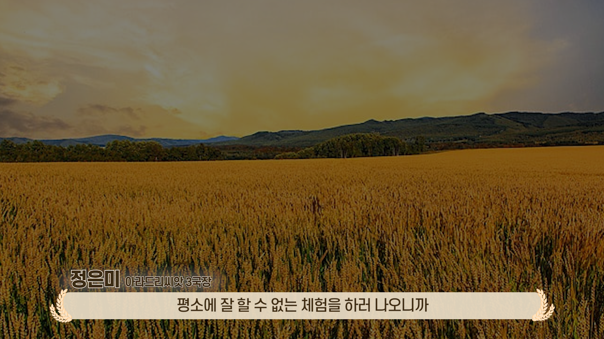
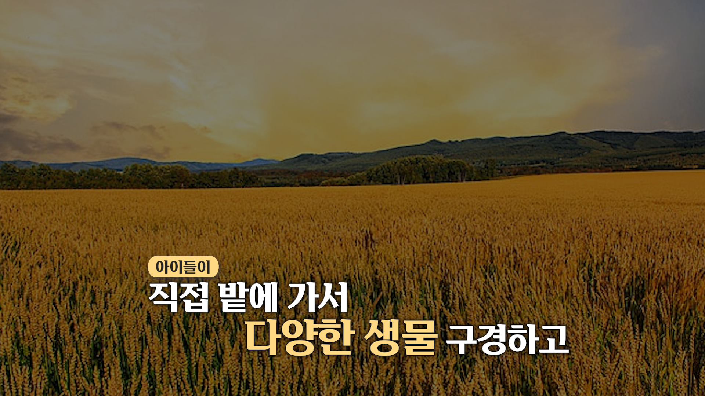
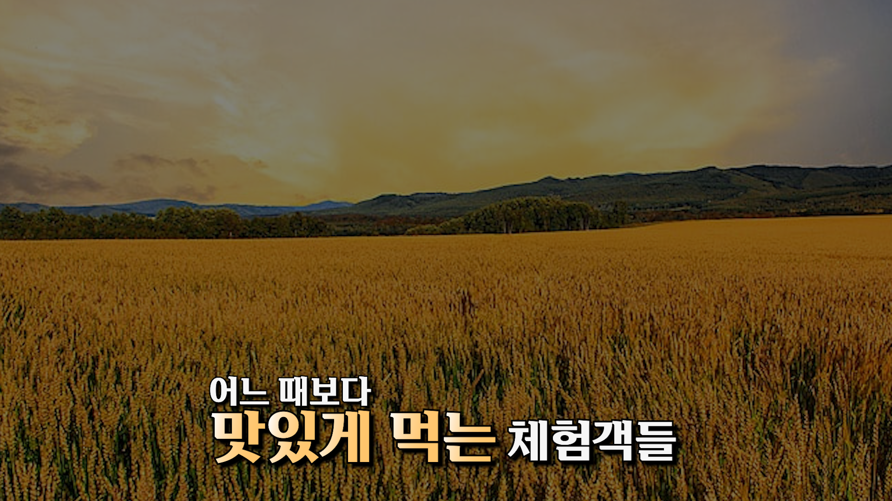
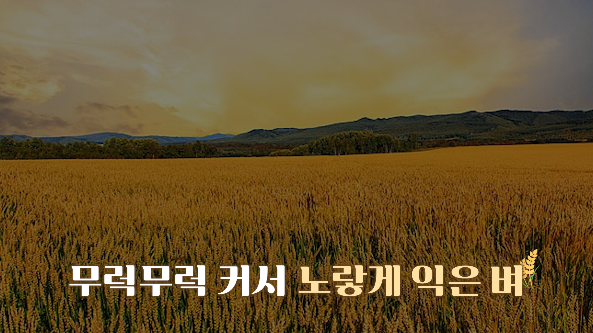
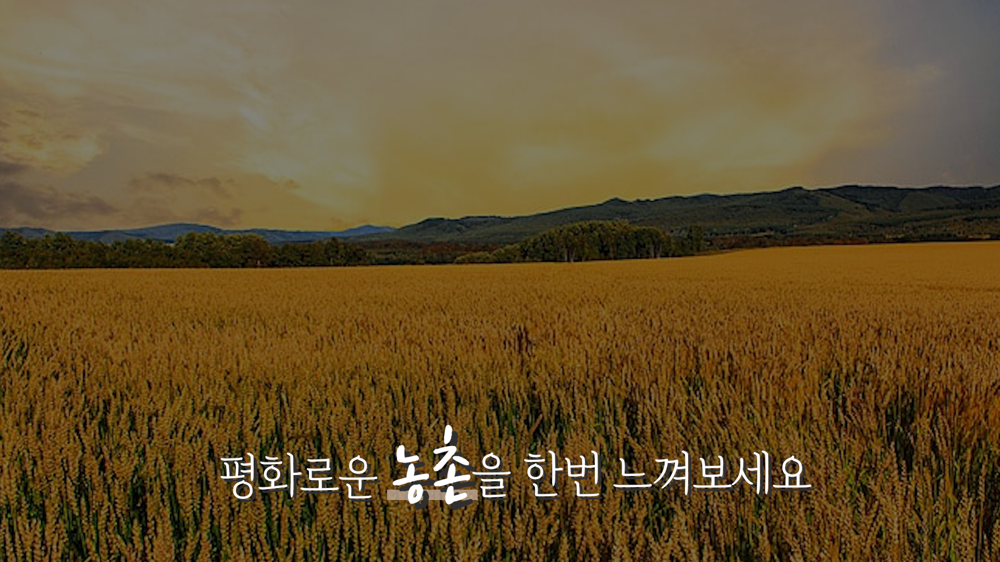
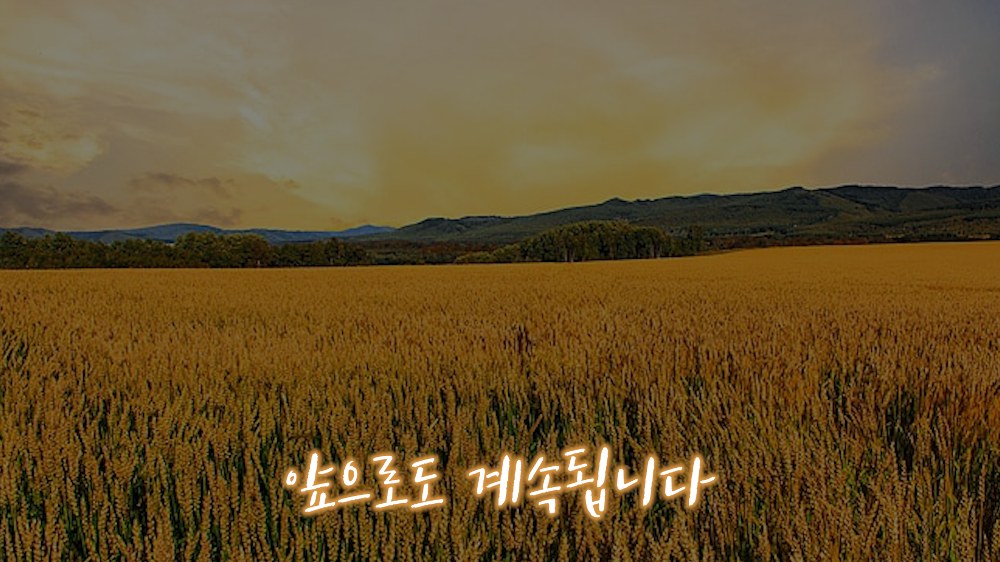
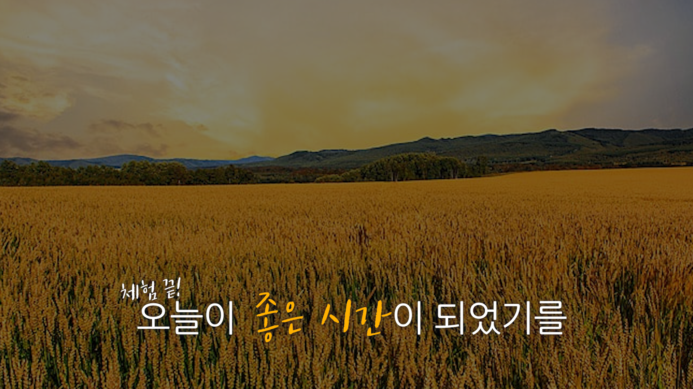
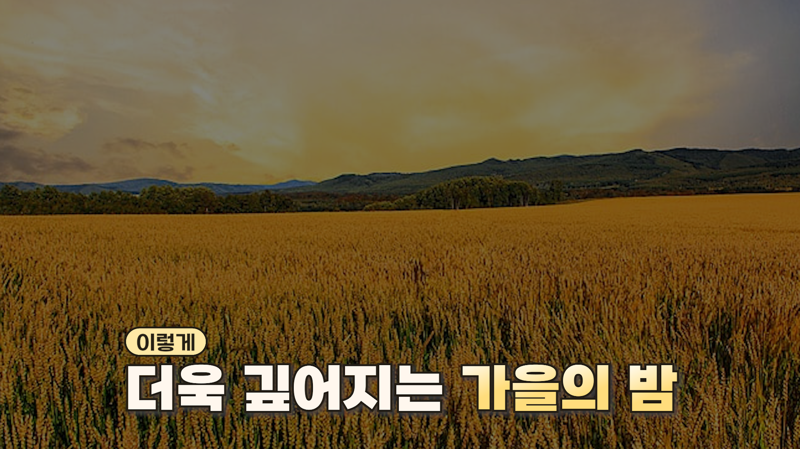

다랑논 프로젝트 자막 패키지
다랑논의 풍요로움과 자연의 활기를 담은 영상 프로젝트를 위한 자막 패키지입니다. 밝고 긍정적인 분위기를 전달하는 데 중점을 두었습니다.
디자인 컨셉
Color Palette
#FFE1A4
#FFB100
잘 익은 벼의 황금빛과 따사로운 햇살을 상징하는 노란색 계열을 사용하여, 영상에 풍요롭고 생동감 넘치는 에너지를 더하고자 했습니다.
자막 패키지 상세
기본 자막

말자막

두 줄 자막 (Style 1)

두 줄 자막 (Style 2)
반응 자막
한 줄 자막 (5종)

Style 1

Style 2

Style 3

Style 4

Style 5